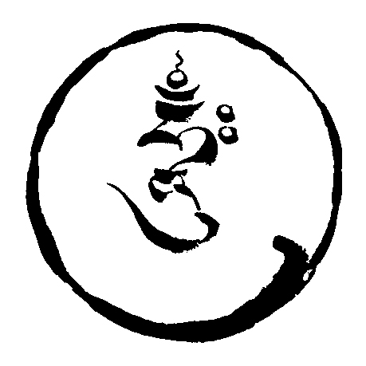

Stilles Sitzen und yogischer Gesang. Eine Praxisgruppe der Aro gTér-Tradition.
Silent sitting and yogic song. A sitting group of the Aro gTér Tradition.
Wenn du einfach vergisst, was richtig und falsch ist, und einfach sitzt – kommt die ganze Sache von selbst zur Ruhe.
— Khandro Déchen1
If you simply forget about right and wrong and simply sit—the whole deal will relax by itself.
— Khandro Déchen1
Wir sitzen gemeinsam in Stille und praktizieren dazwischen yogischen Gesang.
Das stille Sitzen basiert auf shi-nè – einer Dzogchen-Methode, die den Geist zur Ruhe kommen lässt. Was im Geist auftaucht, lassen wir kommen und wieder gehen, ohne uns einzumischen, zu urteilen oder zu benennen, und ohne festzuhalten. Wir geben uns Zeit und Raum, zur Ruhe zu kommen, und öffnen uns dem, was sich zeigt, wenn die Gedanken sich beruhigen. Im yogischen Gesang unterbrechen Klang und Körperempfindung die Stille und eröffnen die Möglichkeit, die Präsenz des Gewahrseins zu finden. Die Form entspricht den Praxisgruppen der Aro gTér-Linie an anderen Orten.
Die Gruppe ist offen für alle, mit oder ohne Meditationserfahrung. Geleitet wird sie von Philip, Apprentice bei Ngakma Déwang Pamo und Naljorpa Trak’thung Dorje.
Der Name stammt von Roaring Silence, dem Buch von Ngak’chang Rinpoche und Khandro Déchen über die Meditationspraxis aus der Perspektive des Dzogchen.
We sit together in silence and practise yogic song in between.
The silent sitting practice is based on shi-nè – a Dzogchen method that lets the mind come to rest. We let what appears in the mind come and go, without getting involved, judging, or naming it, and without holding on. We give ourselves time and space to rest, open to what manifests as the thoughts calm down. In yogic song, sound and bodily sensation interrupt the silence and open the possibility of finding presence of awareness. The format is the same as in Aro gTér sitting groups elsewhere.
The group is open to everyone, with or without meditation experience. Sessions are held in German, and in English as needed. It is led by Philip, Apprentice to Ngakma Déwang Pamo and Naljorpa Trak’thung Dorje.
The name comes from Roaring Silence, the book on Dzogchen meditation by Ngak’chang Rinpoche and Khandro Déchen.
Zurzeit sind keine Termine eingetragen. Neue Termine erscheinen hier und im Kalender.No dates are listed at the moment. New dates will appear here and in the calendar.
Absagen stehen zuerst hier und in der Signal-Gruppe. Abonnierte Kalender aktualisieren sich oft erst nach einigen Stunden.Cancellations appear here and in the Signal group first. Subscribed calendars often take a few hours to update.
Alle Termine erscheinen in deinem Kalender und aktualisieren sich von selbst.All dates appear in your calendar and update by themselves.
Falls der Knopf nichts öffnet: diese Adresse im Kalenderprogramm unter „Kalender per URL hinzufügen“ einfügen.If the button opens nothing, paste this address into your calendar app under “Add calendar from URL”.
roaring-silence.ics
In der Signal-Gruppe gibt es Erinnerungen und kurzfristige Änderungen. Nur die Leitung schreibt, es bleibt also ruhig.The Signal group carries reminders and short-notice changes. Only the organiser posts, so it stays quiet.
Der Beitrittslink folgt. Bis dahin genügt eine E-Mail.The invitation link will follow. Until then, an email is enough.
aro.sangha.cologne@gmail.com
Köln-Mülheim. Die genaue Adresse folgt hier und steht in jedem Kalendereintrag.Köln-Mülheim. The exact address will follow here and is included in every calendar entry.
Die Teilnahme ist kostenlos. Wir freuen uns jedoch über Spenden, um die Raumkosten zu decken – einmalig vor Ort.Participation is free. We're glad to receive donations to help cover the cost of the room, once at the session.
Nein. Zu Beginn jeder Sitzung gibt es eine kurze Einführung in das, was wir tun. Für die meisten Veranstaltungen der Linie gilt: keine Voraussetzungen, keine Erfahrung mit Meditation oder Buddhismus nötig.
Bei Interesse bietet die Linie jedoch einen kostenlosen Meditationskurs per E-Mail an.
No. Each session opens with a short introduction to what we do. For most events in the lineage there are no prerequisites, and no experience with meditation or Buddhism is needed.
However, if you're interested, the lineage offers a free meditation course by email.
Ja. In der Aro gTér-Linie leben die meisten Praktizierenden mitten im Alltag, nicht im Kloster. Mehr dazu im Interview mit Ngakma Déwang Pamo.
Yes. In the Aro gTér lineage, most practitioners live fully in everyday life rather than in a monastery. More in this interview with Ngakma Déwang Pamo.
Eine Stunde, sonntags von 18 bis 19 Uhr. Wir sitzen gemeinsam in Stille und üben dazwischen yogischen Gesang. Davor steht die kurze Einführung, Fragen sind willkommen.
One hour, Sundays from 6 to 7 pm. We sit together in silence and practise yogic song in between. The short introduction comes first, and questions are welcome.
Nein. Die Praxis selbst ist nicht an einen Glauben gebunden.
Was bei Veranstaltungen der Linie zu erwarten ist (englisch) · Häufige Fragen zur Meditation
No. The practice itself asks for nothing to be believed.
Nein. Es geht nicht darum, ein perfekter Teil eines perfekten Chors zu sein – sondern in die Dimension des Klangs einzutreten.
Zittrige oder brüchige Töne gehören zur Übung.
No. The principle is not to be a perfect part of a perfect choir – but to enter into the dimension of sound.
Quivering or faltering notes are part of the practice.
Das ist auch nicht nötig. Um zu meditieren, muss das Denken nicht aufhören.
You don’t have to. It is not necessary to stop thinking in order to meditate.
Meditieren geht in vielen Körperhaltungen, auch auf einem Stuhl. Es zählt ein aufrechter Rücken, nicht der volle Lotussitz.
Meditation works in many postures, a chair included. What matters is an upright spine, not full lotus.
Nein. Vor Ort stehen gute Sitzkissen und Matten zur Verfügung.
No. Good cushions and mats are available at the venue.
Nein, komm einfach vorbei, einmal oder regelmäßig. Ob ein Termin stattfindet, steht oben unter Termine und in der Signal-Gruppe.
No, just come along, once or regularly. Whether a session takes place is listed above under Dates and in the Signal group.
Bequeme Alltagskleidung genügt.
Comfortable everyday clothes are fine.
Die Teilnahme ist kostenlos. Wir freuen uns über Spenden, um die Raumkosten zu decken, einmalig vor Ort.
Participation is free. We're glad to receive donations to help cover the room, once at the session.
Das geht zum Beispiel über das Mentorship-Programm der Linie. Wenn du magst, wird dir hier eine erfahrene Begleitperson vermittelt, der du Fragen zur Praxis stellen kannst. Solltest du Interesse daran entwickeln, dich tiefer mit dem Vajrayana-Buddhismus auseinanderzusetzen, und Möglichkeiten suchen, die Praxis auf das eigene Leben zuzuschneiden, empfiehlt sich ein Apprenticeship bei einer qualifizierten Lehrperson. Für die Teilnahme an dieser Gruppe ist beides keine Voraussetzung.
This happens, for example, through the lineage's Mentorship programme. If you like, you're paired with an experienced practitioner you can ask questions about the practice. Should you develop an interest in engaging more deeply with Vajrayana Buddhism and look for ways to tailor the practice to your own life, an Apprenticeship with a qualified teacher is recommended. Neither is a prerequisite for taking part in this group.
Ngakma Déwang Pamo und Naljorpa Trak’thung Dorje bieten online wöchentlich öffentliche Belehrungen und Gruppenpraxis an, darunter sKu-mNyé: Dasein in Bewegung und eine Morgenpraxis.
Ngakma Déwang Pamo and Naljorpa Trak’thung Dorje offer weekly teachings and group practice online, including sKu-mNyé: Moving Being and a Morning Practice session.
Weitere Fragen beantwortet eine E-Mail.Any other question is welcome by email.